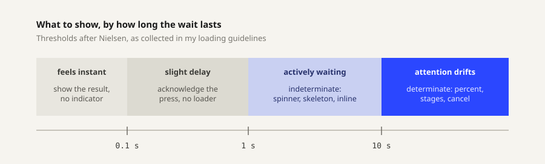

Research
Started with loading as a topic rather than with sketches, because determinate and indeterminate is not a style choice. It is a claim about what the system knows.
How long is the wait

The threshold picks the type. One catch: hold the indicator back about half a second past the limit, because flashing a spinner at work that finishes quickly makes the interface feel slower. Knowing when not to appear is part of the job.
Determinate or indeterminate
| Determinate | Indeterminate | |
|---|---|---|
| Claims | This much is done | Something is happening, length unknown |
| Use when | The system can count, past 10 s | Short waits, or nothing countable |
| Must | Track the real thing, never reassure | Never stall |
| Screen reader | role="progressbar" plus live aria-valuenow | Same role, aria-valuenow left out |
As soon as progress becomes knowable, an indicator should move from the right column to the left. Direction is fixed too: linear runs leading edge to trailing, circular starts at the top and turns clockwise.
Why the same wait feels different
| Finding | Source | What I take from it |
|---|---|---|
| Backwards ribbing that decelerates cut perceived duration about 11 percent | Harrison and others, 2010 | Motion direction is a lever, not decoration |
| More, smaller steps read as faster; fewer, larger steps stretch the wait | Ziat and others, 2022 | Step granularity is a tone control |
| A skeleton previews the layout, a spinner spotlights the delay | Repeated everywhere, no controlled study | Trust the direction, not the 30 percent figure |
Rules the tone has to survive
| Rule | What it forces |
|---|---|
| Keep moving | A frozen loader reads as a frozen app |
| Stay proportional | Small update, small indicator |
| Speak plainly | “Saving changes”, not “API request pending” |
| Offer a way out | Cancel on long work, when it is safe |
| Do not block | Let background work run and report back |
| Never motion alone | Status needs text, and has to park under reduced motion |
Pattern survey
Sixteen existing patterns on one shared clock, so the same real duration can be compared across forms. The last group separates form from placement: a button state and an inline state are the same shapes put somewhere specific.
At 10 seconds the numeric readout is the most precise and the least bearable, because there is nothing to watch between updates. The segmented bar at 20 steps feels quicker than the smooth bar over an identical duration, exactly as the study predicts.
Into the designs
- Both halves of a set share a tone, not a shape. A bar squeezed into a circle is not the same indicator.
- Granularity, easing, and direction are where tone lives, and critique can argue with all three.
- Each set needs a named context, because an indicator has no tone without something to be the tone of.
- Status text is part of the design. Three tones should produce three different sentences.
Sources
- Loading in Web and Mobile Interfaces, my compiled guide, drawing on Nielsen Norman Group, Apple Human Interface Guidelines and Material Design
- Response Time Limits, Jakob Nielsen, NN/g
- Progress indicators, Material Design 3
- Faster Progress Bars, Harrison, Yeo and Hudson, CHI 2010
- Malleability of time through progress bars and throbbers, Ziat and others, Scientific Reports, 2022
- ARIA progressbar role, MDN
Process
Next: three tones, named with their contexts, then sketches before any code.
Ideation
Loose sketches before the three tones are picked. Each one runs live in its box.
Result
The six indicators are not designed yet. This section gets the three sets, each with its determinate and indeterminate pair, once the drawings and prototypes exist.
Critique
Feedback from class goes here.